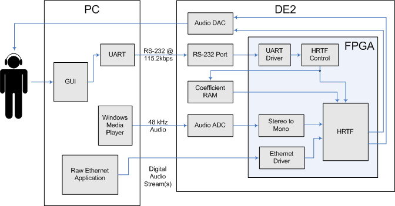

|
Head Related Transfer Function
ECE 576 - Fall 2006 Brett Patane & Eric Brumer Introduction & Architecture | Design | Analysis & Conclusion | Appendix |
IntroductionOur final project is a real-time head related transfer function (HRTF) system. The goal of the HRTF is sound spatialization, where a sound source is 'positioned' such that a user wearing headphones will interpret the sound as coming from a location in space around their head. The HRTF is accomplished by filtering the left and right outputs of the music separately, through different FIR filters. Our project allows for real-time positioning of multiple input sound sources, where the user (listening to music through headphones) can position an input source through the use of a graphical user interface. System ArchitectureThe following diagram shows our system architecture: 
On the PC, Windows Media Player plays a music track which is input (through a 1/8inch to 1/8inch audio cable) to the audio ADC on the DE2 board. We perform stereo to mono conversion (averaging the left and right channels), and perform our HRTF filtering. For more audio streams, we send 16-bit digital audio samples over ethernet to our HRTF filtering unit. This output is sent through the audio DAC and is played for the user through a set of headphones. To position the sound in real-time, we change the filter coefficients in the left & right HRTF filters when the user requests it. The user enters an azimuth and elevation (horizontal and vertical angles, respectively) into the GUI running on the PC. The azimuth and elevation are sent over an RS-232 port through to the DE2, where the FPGA control code intercepts the new azimuth and elevation, and changes the filter coefficients accordingly. Since we have a large set of filter coefficients, we store them on the off-chip 512kB SRAM chip on the DE2 board. HRTFOur work is a real-time implementation of the work done by the UC Davis sound spatialization group. Their work involved the study of sound spatialization and gathering audio impulse responses for a multitude of patients, by putting microphones in either ear, and playing a sound from a certain azimuth and elevation. Coordinate SystemThe coordinate system is best explained through a series of points. Each of these points is of the form (azimuth, elevation) and all numbers are in degrees.
(0, 0) is directly ahead
(90, 0) is directly to the right
(-90, 0) is directly to the left
(0, -90) is directly underneath
(0, 90) is directly above
(0, 180) is directly behind
|